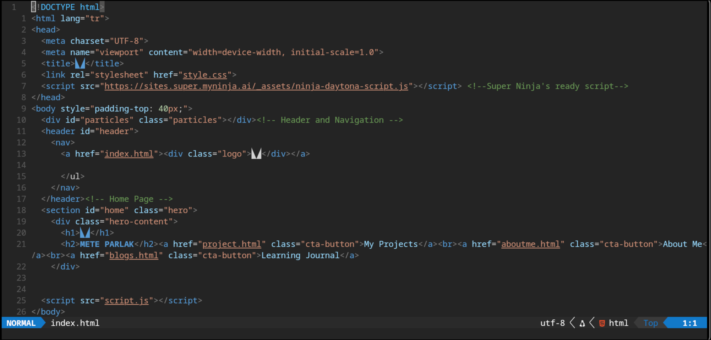
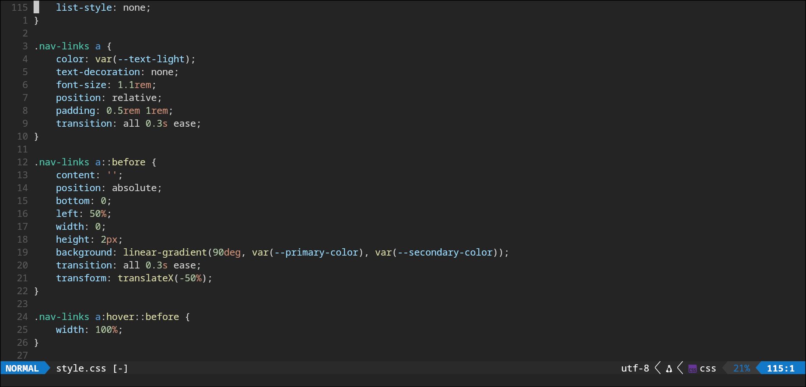
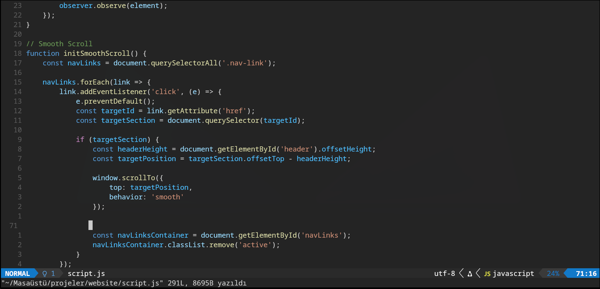

Website Learning Journal
I created this website to collect my projects, talk about myself, and share my learning journals. I also created it to work in web page development areas.
How Did the Website Idea Come About?
As a young developer, I share my projects on github. However, only this seemed insufficient to me. I wanted to develop my own site and have the opportunity to both talk about myself and explain my projects in more detail. That's when the idea of creating my own website came to mind.
Cannot Step Without Learning

After a short period of planning, I decided that my website could currently be developed only with frontend. Because there was no file download, only reading, graphic features like animations would be present. Redirecting to the github page was sufficient to download my projects. To develop frontend, I didn't know the languages I needed to know other than a little CSS. I started preparing by starting to learn the html language, which is one of the most important languages in this field. I learned HTML without going to any course, by listening to a full course on YouTube (The course I listened to: HTML course). I send my thanks to the person who made the video. Afterwards, I realized I needed to have CSS knowledge to be able to create designs. I was lucky that I didn't have much trouble using CSS on my website because I was used to designing tools like waybar, hyprpaper on Linux with CSS. Afterwards, I realized I needed to write javascript to make my website usable. Since javascript courses were very long and I wanted to progress quickly, AI (artificial intelligence) wrote the javascript part of my website. I used cerebras as artificial intelligence. I don't see using artificial intelligence as a weakness, but as faster progress and being able to handle more work. I wrote the basic HTML and CSS, gave the scenario and prompt, and it wrote the javascript. Think like this: You are an architect, you create the plan of your building, you draw the road map. Artificial Intelligence is a worker, it builds the house according to the plan and road map.
Components
HTML
HTML, as I mentioned above, creates the skeleton of the frontend. The texts and lists you give it are the content of the website. Afterwards, if you wish, you can give them a better appearance using languages like CSS. In my website's HTML, I used basic HTML components like div, h (heading), p (paragraph), meta and lists (ul: unordered list and ol: ordered list). Also, to link CSS and javascript files to my HTMLs, I used commands like script. Also, I realized that HTML is not such a fragile language, even if I make serious syntax errors, the browser can read HTML. While developing the HTML layer, I undoubtedly learned one of the biggest areas in web site development.
CSS
CSS is a language used for design in many areas. It's not for writing programs, it's used in designing an existing program. The purple and blue colors, blue headings, boxes, buttons like components you see on this website are thanks to CSS. While designing my website with CSS, I learned how to link HTML with CSS and how to use HTML components in CSS.
Javascript
Javascript adds interaction to the site. Thanks to Javascript, buttons work, animations are added, mathematical operations can be done... If a site consists only of parts like HTML and CSS, it has an appearance but the user cannot interact with the site. Since Javascript, as I mentioned above, is a language that takes a certain amount of time to learn, I delegated the javascript writing task to AI.
Some of the components I created
Project card
The boxes that animate when the cursor hovers over them, which are on my projects page and learning journal pages, are the "project-card"s I created. The project name doesn't have any special area. I used my "project-card" class because I designed a box design under the "project-card" name in my CSS design when I used the box.
About Content
This component is also a box I designed with CSS. Designed for reading rather than click and hover animation, you can add an explanation by simply writing a heading and paragraph in this class. The text you are currently reading is inside the "about content" class. That is, the box you are currently looking at is this component I mentioned.
What else did I learn while creating my website?
- I learned to give color with "color" and size by specifying headings like "h3", "h4" that we use in HTML as ".about-content h4" there, while designing with CSS.
- I understood the before structure in CSS better and where it is used
What am I doing now?
While this website currently contains my learning journals, projects and information about myself, I'm thinking of sharing blogs about researching certain topics in the future. But I plan for it to be in the near future because these days I'm interested in AI (artificial intelligence) and ML (Machine Learning) fields.